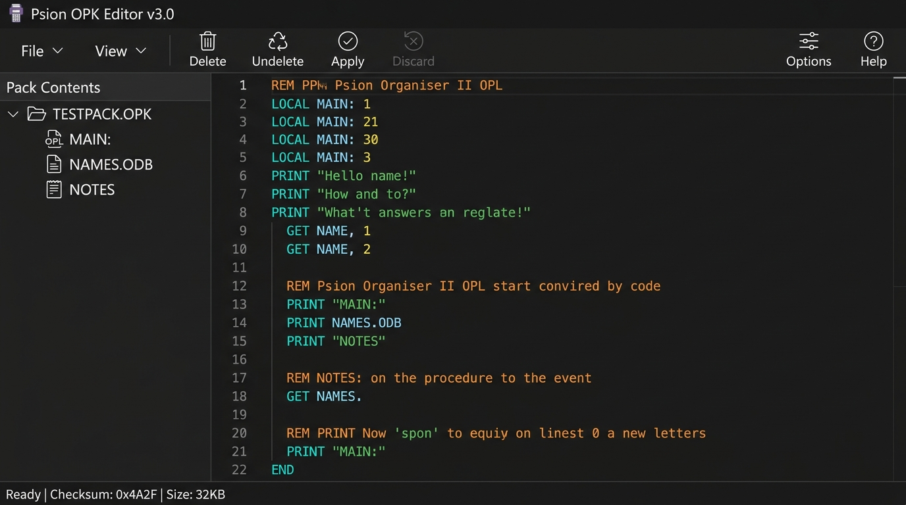
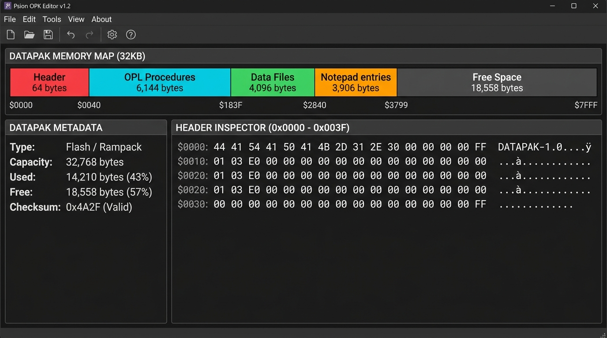
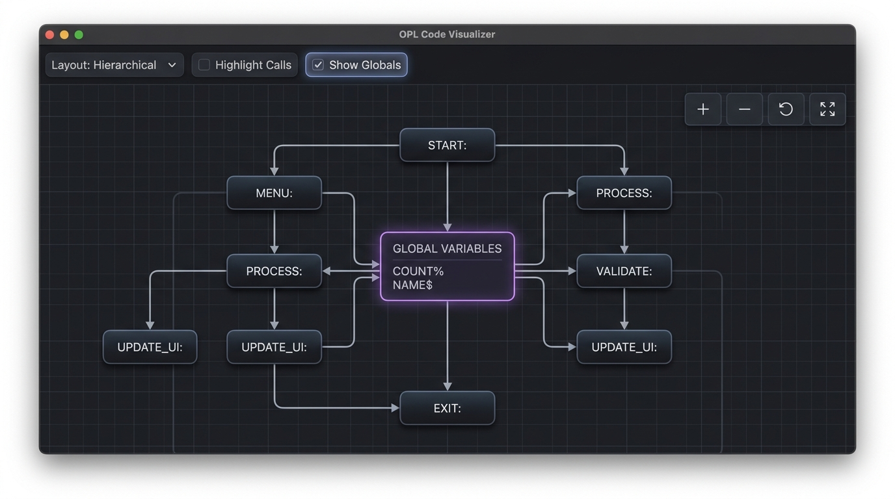

| Shortcut | Action | Description |
|---|---|---|
| Ctrl + S | Save Pack (.opk) | Downloads the active pack as an emulator-ready .opk binary file. |
| Ctrl + O | Open Pack | Prompts browser file picker to load an existing .opk, .hex, or .bin pack. |
| Ctrl + Shift + S | Export Intel HEX (.hex) | Exports the full pack image as Intel HEX for burning to physical EPROM chips. |
| Ctrl + Enter | Apply Changes | Validates, recompiles, and writes pending edits into active pack memory. |
| Ctrl + N | Toggle File Menu | Expands or closes the primary File Menu dropdown. |
| Delete / Backspace | Delete Item | Marks the selected record as deleted ($00). Guarded while editing text. |
| Shift + Delete | Recycle / Undelete | Toggles deleted status (undeletes an erased record or marks active record as deleted). |
| Ctrl + Click | Toggle Selection | Adds or removes non-contiguous items from the multi-selection. |
| Shift + Click | Range Selection | Selects a continuous range of records in the sidebar list. |
| Shortcut | Action | Description |
|---|---|---|
| Ctrl + F1 | Help / About | Opens editor overview, documentation tutorial, and software credits. |
| Ctrl + F2 | New Pack | Initializes a fresh virtual Datapak image (8KB, 16KB, 32KB, 64KB, 128KB, etc.). |
| Ctrl + F3 | Open Pack | Prompts browser file picker to load an existing .opk, .hex, or .bin pack. |
| Ctrl + F4 | Save Pack (.opk) | Downloads the active pack as an emulator-ready .opk binary file. |
| Ctrl + F5 | Toggle File Menu | Expands or closes the primary File Menu dropdown. |
| Ctrl + F6 | Delete Item | Marks the selected record or procedure as deleted ($00). |
| Ctrl + F7 | Import Item | Imports external procedure files (.opl), data tables (.odb), or binary blocks. |
| Ctrl + F8 | Export Hex (.hex) | Exports the full pack image as Intel HEX for burning to physical EPROM chips. |
| Ctrl + F9 | Apply Changes | Validates, recompiles, and writes pending edits into active pack memory. |
| Ctrl + F10 | Discard Changes | Discards uncommitted modifications and reverts editor buffer. |
| Ctrl + F11 | Options | Opens the preferences modal for themes, line numbers, guidelines, and compiler target. |
| Ctrl + F12 | Key Map | Displays the on-screen function key mapping sheet. |
| Shortcut | Action | Description |
|---|---|---|
| Alt + C | Toggle Code Window | Shows or hides the procedure source code preview sidebar. |
| Alt + K | Toggle Legend | Shows or hides the visualizer color legend and key window. |
| Alt + P | Toggle Calls | Toggles procedure call tree connection links on/off. |
| Alt + A | Toggle Access (Reads) | Toggles global variable access / read lines on/off. |
| Alt + U | Toggle Usage (Writes) | Toggles global variable write / modification lines on/off. |
| Alt + G | Toggle All Globals | Atomically toggles both global read access and write usage lines. |
| + or = | Zoom In | Increments the diagram zoom magnification level. |
| - or _ | Zoom Out | Decrements the diagram zoom magnification level. |
| Ctrl + Wheel | Canvas Zoom | Smoothly zooms diagram centered at cursor position. |
| Shortcut | Context | Action & Description |
|---|---|---|
| Enter | Sidebar Item Row | Opens and selects the highlighted record or procedure in its editor. |
| ↑ / ↓ | Sidebar List | Navigates selection up or down through pack items and volume headers. |
| Shift + ↑ / ↓ | Sidebar List | Extends multi-selection range across items up or down. |
| → / ← | Sidebar Pack Header | Expands (→) or collapses (←) the Datapak folder tree. |
| Escape | Dropdown Menu | Closes any open dropdown or popup menu without triggering an action. |
| Arrow Keys | UDG Editor | Navigates the cursor across the 5×8 User Defined Graphic pixel matrix. |
| Space / Enter | UDG Editor | Toggles the active matrix pixel on or off. |
| 0 – 7 | UDG Editor | Directly switches active UDG character slot (0 through 7). |
| C | UDG Editor | Copies the generated OPL character definition code directly to clipboard. |
| Space / Enter | OPL Code Editor | Automatically uppercases OPL keywords (when enabled in Options). |